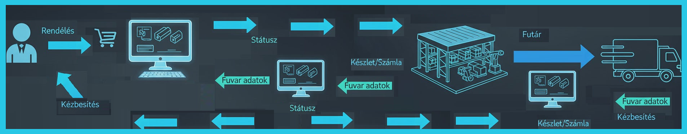

I. TANANYAG
A Logisztikai Információs Rendszer
Üdvözlünk a Webáruház működtetése tantárgy Logisztikai feladatok témakörében!
Ebben a modulban a Logisztikai információs rendszerekkel ismerkedünk,
a "gépházba" nézünk be: megvizsgáljuk azt a digitális gerincet, ami nélkül egy modern webshop csupán egy üres kirakat lenne.
A "Black Friday Káosz"
Képzeld el a helyzetet: Black Friday, délelőtt 10:00. A vevő megveszi a hőn áhított terméket. A webshop 100 db-ot mutatott készleten. A valóságban a raktárban 0 db van. A vevő 2 napos szállítást látott, de a rendszer már most 3 napos csúszásban van, és erről senki nem tud.
A kérdés: Hogyan akadályozza meg egy jól felépített Logisztikai Információs Rendszer (LIS) ezt a katasztrófát?
A Rendelés Útja
Egy rendelés adatai több, egymással tökéletes szinkronban lévő rendszeren utaznak keresztül. Vidd az egeret a dobozok fölé a buborékokért!
1. WEBÁRUHÁZ
(pl. Shopify, Magento)A "kirakat", ahol a vevő leadja a rendelést. Ez a folyamat indítója (trigger). Azonnal továbbítania kell a rendelés adatait az ERP felé.
2. ERP
Vállalatirányítási RendszerA vállalat "agya". Fogadja a rendelést, ellenőrzi a központi készletet, lefoglalja a terméket, és generálja a számlát. Ez az "egyetlen igazság forrása" (Single Source of Truth).
3. WMS
Raktárirányítási RendszerA fizikai raktár digitális irányítója. Megkapja az ERP-től a "szedési listát", optimalizálja a raktáros útvonalát, kezeli a csomagolást és a tárhelyeket.
4. TMS
Szállítmányozási RendszerA "last mile" menedzsere. Megkapja a kész csomag adatait, kommunikál a futárcégekkel (pl. GLS, DPD), és kinyomtatja a szállítási címkét.
Fogalomtár
A térképen látott rendszerek és folyamatok kulcsfogalmai:
- Automatizáció
- A manuális munka (pl. adatok másolása, e-mailek írása, címkenyomtatás) kiváltása a rendszerek közötti automatikus adatátvitellel. Ez csökkenti a hibát és növeli a sebességet.
- CRM (Customer Relationship Management)
- Ügyfélkapcsolat-kezelő rendszer. Ez a szoftver tárolja a vevők adatait, vásárlási előzményeit, kommunikációját. Gyakran az ERP vagy a webáruház motor része. A logisztika számára azért fontos, mert ez adja a pontos szállítási címet és elérhetőségeket.
- Dokumentumkezelés
- A logisztikai folyamatot kísérő hivatalos dokumentumok digitális létrehozása és áramlása. Ide tartozik a Számla (az ERP generálja), a Szállítólevél (a csomagba kerül, az ERP vagy WMS generálja), valamint a Raktári bevét és Kiadás bizonylatai (a WMS kezeli).
- Integráció
- A LIS kulcsfogalma. A különböző szoftverkomponensek (Webáruház, ERP, WMS, TMS) összekapcsolása, hogy az adatok automatikusan, emberi beavatkozás nélkül áramolhassanak közöttük. Leggyakrabban API-kon (Application Programming Interface) keresztül valósul meg.
- Logisztika
- Az e-kereskedelemben a logisztika jelenti a teljes fizikai folyamatot a termék beszerzésétől a vevőnek történő kézbesítésig. Magában foglalja a raktározást, a komissiózást (picking), a csomagolást (packing) és a szállítmányozást. A LIS ennek a fizikai folyamatnak a digitális irányítója.
- Raktározás
- A logisztika fizikai része; a termékek átvétele, tárolása a raktárban, majd összekészítése (komissiózás) és csomagolása a kiszállításhoz. A modern raktározást szoftveres (WMS) és hardveres (pl. vonalkódolvasók, PDA-k) eszközök támogatják a hatékonyság érdekében.
- Rendszer
- Összefoglaló név az egymással összekapcsolt szoftveres és hardveres elemek összességére. A LIS (Logisztikai Információs Rendszer) maga is egy rendszer, ami kisebb alrendszerekből (ERP, WMS, TMS) áll, melyek egy közös célért (a rendelés teljesítése) működnek együtt.
- Státuszkövetés
- A sikeres integráció leglátványosabb eredménye. Azt jelenti, hogy a belső logisztikai állapotokat (pl. "Feldolgozás alatt", "Összekészítés alatt", "Szállítás alatt") valós időben, automatikusan kommunikáljuk a vevő felé.
- Szállítmányozás
- A logisztikai lánc utolsó, de egyik legkritikusabb lépése: a csomag eljuttatása a raktárból a vevőhöz ("last mile delivery"). Ezt jellemzően külső futárszolgálatok végzik. A TMS szoftver feladata ezen partnerek digitális kezelése.
- TMS (Transportation Management System)
- Szállítmányozás-irányítási Rendszer. A "last mile" (utolsó kilométer) menedzsere. Ez a szoftver áll kapcsolatban (integrációban) a futárszolgálatok (pl. GLS, DPD, Packeta) rendszereivel. Automatikusan generálja a szállítási címkéket (fuvarleveleket) és kezeli a csomagkövetést.
- Vállalatirányítási Rendszer (ERP)
- Egy integrált szoftverrendszer, amely egy vállalat összes fő üzleti folyamatát kezeli (pénzügy, HR, beszerzés, készlet). A LIS esetében ez a központi adatbázis, az "agy", ami megmondja, miből mennyi van, és kezeli a számlázást. Ez biztosítja az "egyetlen igazság forrását" (Single Source of Truth).
- Vevő
- A logisztikai folyamat alfája és omegája. Ő indítja el a folyamatot a rendelésével, és ő a végső címzettje a fizikai terméknek és a státuszfrissítéseknek is. A teljes rendszer az ő elégedettségének biztosítására épül.
- Webáruház (Motor)
- A "kirakat", a felhasználói felület, ahol a vevő leadja a rendelést. A logisztikai folyamat szempontjából ez a legelső láncszem, az esemény indítója (trigger). Feladata a rendelési adatok és a vevői adatok rögzítése és azonnali továbbítása az ERP rendszer felé.
- WMS (Warehouse Management System)
- Raktárirányítási Rendszer. A fizikai raktár digitális mása és irányítója. Pontosan tudja, melyik termék melyik polcon (tárhelyen) van. Optimalizálja a raktárosok "szedési" (komissiózási) útvonalát, és kezeli a raktári bevételezést és kiadást.
Stratégiai Vita: Beruházzunk vagy ne?
Egy napi 100 rendeléses KKV webáruház vagyunk, ami kinőtte az Excelt. A vezetőség előtt két út áll:
- Vegyünk egy drága, integrált ERP/WMS rendszert (50.000 EUR beruházás).
- Oldjuk meg "okosba": használjunk több olcsó, különálló szoftvert (pl. egy számlázó, egy készletkezelő, egy futárintegrátor) és foltozgassuk össze ("patchwork").
Nincs egyetlen jó megoldás. Mindkettő mellett és ellen is szólnak stratégiai érvek. A következő feladatban ezeket kell a helyükre tenned!
Interaktív Feladat: Érvek Párosítása
Húzd az alábbi érveket a megfelelő dobozba! Dönts el, melyik érv szól a drága, integrált rendszer **Mellett (Pro)**, és melyik **Ellene (Con)**.
MELLETTE (Pro)
(Húzz ide érveket!)
ELLENE (Con)
(Húzz ide érveket!)
II. FELDOLGOZÁSI TERV (45 perc)
Ez a tananyag egy 45 perces tanórára lett tervezve, ahol a fókusz a kritikai gondolkodáson és a stratégiai döntéshozatalon van.
Tanulási Célok (Bloom-taxonómia alapján)
- Ismeret: A tanuló definiálja a LIS fő komponenseit (ERP, WMS, TMS).
- Megértés: A tanuló elmagyarázza az adatáramlás útját egy rendelés során.
- Alkalmazás: A tanuló a "státuszkövetés" és "automatizáció" fogalmait egy valós példán keresztül bemutatja.
- Analízis: A tanuló összehasonlítja az integrált és a "patchwork" rendszerek előnyeit és hátrányait.
- Értékelés: A tanuló képes érvelni egy adott LIS-beruházás mellett vagy ellen egy KKV-szcenárióban.
Óraterv
| Idő | Tanári Tevékenység (Irányítás) | Tanulói Tevékenység (Módszer) | Digitális Eszközök |
|---|---|---|---|
| 0-5 p. | Ráhangolódás: A "Black Friday Káosz" dilemma felvázolása, problémafelvetés. | Brainstorming: Aktív részvétel, hibaforrások azonosítása (Probléma-alapú indítás). | Projektor (a szcenárió kivetítése) |
| 5-20 p. | Irányított felfedezés: Az interaktív térkép elemeinek felrajzolása (tábla/whiteboard). Kérdésekkel vezeti a tanulókat az adat útján. | Konstruktivizmus: A tanulók közösen építik fel a folyamatábrát, válaszolnak a kérdésekre (pl. "Ki tud a készletről?") (Vizuális modellezés). | Ez a weboldal (interaktív térkép) vagy whiteboard. |
| 20-25 p. | Mikro-előadás: A kulcsfogalmak (ERP, státuszkövetés, automatizáció) rögzítése a közösen felépített ábrán. | Jegyzetelés, értelmezés: A fogalmak elhelyezése a kontextusban. | Ez a weboldal (fogalomtár). |
| 25-40 p. | Vita Moderálása: A "Beruházzunk vagy ne?" dilemma felvetése. Két csoport kijelölése (Pro vs. Con). | Stratégiai Vita: A tanulók érveket gyűjtenek és ütköztetnek (Elemzés, Értékelés). | Ez a weboldal (Vita fejezet). |
| 40-45 p. | Szintézis és Lezárás: A vita tanulságainak összegzése. Visszacsatolás a "Black Friday Káoszra" (megoldás felvázolása). | Reflexió: A tanultak összekapcsolása a kiinduló problémával. | - |
Értékelés és Visszacsatolás
- Formális (diagnosztikus): A "Black Friday Káosz" vitában való részvétel mutatja meg az előzetes tudást.
- Formatív (fejlesztő): A stratégiai vita során elhangzott érvek minősége (formatív értékelés).
- Digitális (önellenőrző): Az "Érvek Párosítása" interaktív feladat azonnali visszajelzést ad a tanulóknak a megértésről (lásd fentebb).
III. MÓDSZERTAN
Módszertani Választások Indoklása (Pedagógiai Reflexió)
Ez az óraterv tudatosan távolodik el a hagyományos, frontális oktatástól. Célom nem a lexikális tudás átadása, hanem a rendszerszemlélet (systems thinking) és a kritikai döntéshozatali képesség fejlesztése.
Pedagógiai Megközelítés
Az óra a probléma-alapú tanulásra (PBL) épül. A "Black Friday Káosz" (ráhangolódás) azonnal relevánssá teszi a témát. A tanuló akkor motivált, ha érti, hogy a tananyag hogyan oldja meg a valós, gyakorlati problémáit. Nem a definícióval kezdünk, hanem a fájdalomponttal.
Konstruktivizmus (Irányított Felfedezés)
Az óra gerincét adó "A Rendelés Útja" (interaktív térkép) módszer konstruktivista. Az oktató nem közli az adatfolyamot, hanem a tanulók megépítik azt (a meglévő tudásukra alapozva). Ez a "felfedezés" sokkal mélyebb megértést eredményez, mintha csak egy kész ábrát mutatnánk. A tanulók létrehozzák a tudást, nem passzívan befogadják.